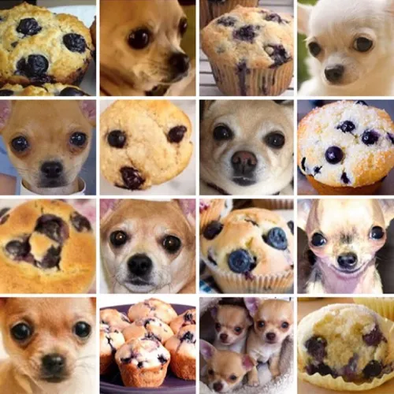
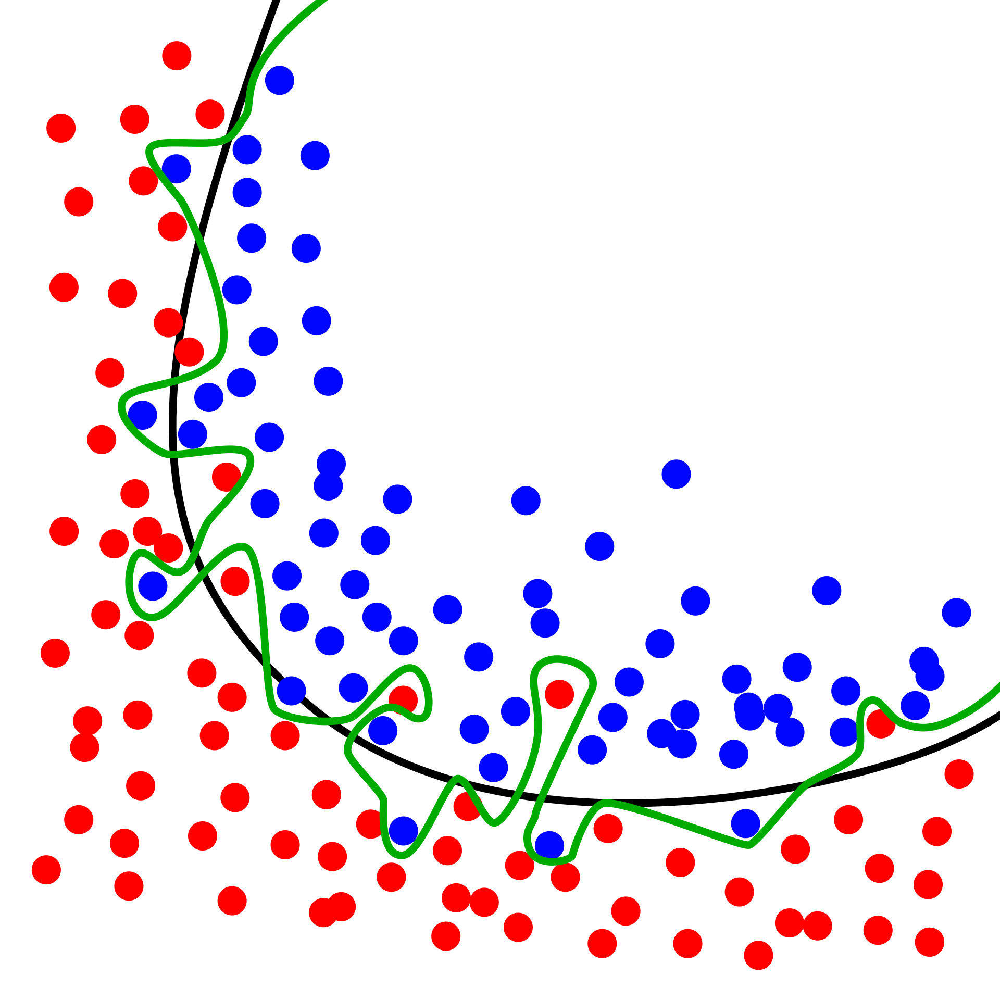

Autodiff and neural nets

Neural net just a complicated function with lots of parameters
Data is passed in: could be images (represented as pixel values), text (represented as strings), audio signals (represented as a time series), etc.
Data is big vector \(\mathbf{x}\in\mathbb{R}^{N_D}\)
For images \(N_D\) is number of pixels in image, \(\times 3\) if colour (three RGB values)
Supervised learning
Purpose of function is to map \(\mathbf{x}\) to output \(\mathbf{y}\) that represents a set of labels
Labels represent e.g. different kinds of objects that might appear in images \[ \mathbf{y} = \mathsf{NN}_\theta(\mathbf{x}) \]
\(\theta\) are parameters
If family of functions is “big enough” then \(\exists\) function that does “good job”
“Big enough” a bit vague idea: large number of parameters and a variety of functions accessible by varying them
“Good job” means that if we try function on a set of labelled data, answer will be correct most of the time
Process of finding “right” \(\theta\) is called training the NN
Making correct prediction can be quantified, so training is a matter of optimizing appropriate function of output \(\mathbf{y}\)
Concepts behind training of NNs not particularly deep
Success of approach based on:
- Free availability of large datasets of labelled data
- Free availability of open source languages, libraries, and models
FreeWide availability of necessary computing power to train models
The cost function
Dataset of size \(N\) consisting of data \(\mathbf{x}_i=1,\ldots N\) together with labels \(l_i\)
Encode labels in vectors \(\mathbf{y}_i\) to be compared with output of the neural network
Popular choice is one hot encoding. \(\mathbf{y}_i\) is \(N_L\) dimensional vector. Label \(n\) encoded as \((0,0,\ldots, 1, \ldots, 0)\), with \(1\) in \(n\text{th}\) place
Want to train network (choose \(\theta\)) so that \(\mathsf{NN}_\theta(\mathbf{x}_i)\) is close to corresponding \(\mathbf{y}_i\) that represents label
To quantify this introduce cost or loss function. Simple example is quadratic cost
\[ \mathcal{C}(\theta) = \frac{1}{2N}\sum_{i=1}^N \lVert\mathbf{y}_i-\mathsf{NN}_\theta(\mathbf{x}_i)\rVert^2 \]
Use usual square norm in \(\mathbb{R}^{N_L}\) of distance between network output and encoded label
We average over training data, because sometimes our network may not perform so well, confusing different labels:

\[ \mathcal{C}(\theta) = \frac{1}{2N}\sum_{i=1}^N \lVert\mathbf{y}_i-\mathsf{NN}_\theta(\mathbf{x}_i)\rVert^2 \]
Now minimize \(\mathcal{C}(\theta)\) over \(\theta\)
Rest of this lecture concerns how this is done
Using a trained model
Need procedure for turning output \(\mathsf{NN}_\theta(\mathbf{x})\) — an \(N_L\) dimensional vector — into discrete label
Simplest way is to find the maximum component and predict corresponding label
\[ l_* = \underset{l}{\operatorname{argmax}} \left[\mathsf{NN}_\theta(\mathbf{x})\right]_l \]
Evaluating performance
Stardard protocol: split dataset into training set and test set
Training set used for training model; test set for evaluating it
After training model should perform well on training set, but will perform less well on test set
Difference between cost function evaluated on test set and training set is a measure of how well the model generalizes to new inputs: generalization error
Overfitting
Particular risk when using large neural networks with many parameters
Sufficiently flexible model capable of “memorizing” dataset without “understanding”, leading to poor generalization

Vivid example in Zhang et al. (2021)
Showed that popular computer vision models can be trained on randomly labelled data to achieve perfect accuracy on training set
Performance on test set no better than random guessing
Natural consequence of overparameterization: having more parameters than data points in training data
Much of the success in training models with good generalization is down to training details (e.g. stopping before the training error gets too low)
Gradient descent
Simple algorithm underlying training
Cost function is differentiable function of parameters \(\theta\)
Idea of gradient descent is to take steps “downhill” i.e. in direction \(-\mathcal{C}(\theta)\) in high dimensional space of all parameters
Each step corresponds to an update of the parameters
\[ \theta_i\longrightarrow \theta'_i = \theta_i - \eta \frac{\partial\mathcal{C}}{\partial \theta_i} \]
- \(\eta\) is hyperparameter called learning rate
\[ \theta_i\longrightarrow \theta'_i = \theta_i - \eta \frac{\partial\mathcal{C}}{\partial \theta_i} \]
Choosing learning rate an important part of craft of training models
Too large and first order approximation underlying breaks down and cost may end up increasing
Too small and network will take too long to train
Often learning rate schedule is used where rate is adjusted during training to optimize convergence
Normally start off with large learning rate and reduce it, but people do all sort of exotic things (like cycling)
Why so simple?
All sophistication lies in how model is defined and how gradients are calculated
Not a trvial task: ChatGPT has 175 billion parameters!
Many more sophisticated optimization methods, but often involve more information about model’s dependence on parameters
Newton’s method requires knowledge of first and second derivatives at each step: too costly to evaluate
Minibatches
- Recall cost defined as average over dataset
\[ \mathcal{C}(\theta) = \frac{1}{2N}\sum_{i=1}^N \lVert\mathbf{y}_i-\mathsf{NN}_\theta(\mathbf{x}_i)\rVert^2 \]
For large datasets of high dimensional data (e.g. images) not practical to calculate gradient of cost using entire dataset
Usual procedure is to split data up into minibatches
Perform each step of gradient descent by evaluating gradient only on batch
Eventually all data in dataset will be used: usually known as one epoch of training
Training a model can involve many epochs (passes through the dataset)
Gradients calculated are going to be more “noisy” than “true” gradients involving whole dataset
Training by gradient descent with minibatches is known as stochastic gradient descent
Generally thought that SGD plays a role in improving generalization performance of neural networks
The network
So far \(\mathsf{NN}_\theta\) just a function \(\mathsf{NN}_\theta:\mathbb{R}^{N_D}\longrightarrow \mathbb{R}^{N_L}\) with lots of parameters \(\theta\)
What is this function, and why is it a “neural network”?
\(\mathsf{NN}_\theta\) must be complicated
How can we make a complicated function?
Answer: do it by composing lots of simpler functions!
\[ \mathsf{NN}_\theta = f_\theta^{(L)} \circ f_\theta^{(L-1)} \cdots \circ f_\theta^{(2)} \circ f_\theta^{(1)} \]
\(f^{(1)}:\mathbb{R}^{N_D}\longrightarrow \mathbb{R}^{h_{1}}\), where \(h_1\) is width of first hidden layer
\(f^{(j)}\) are maps \(f^{(j)}:\mathbb{R}^{h_{j-1}}\longrightarrow \mathbb{R}^{h_{j}}\) for \(j=2, \ldots L-1\)
Output layer is \(f^{(L)}:\mathbb{R}^{h_{L-1}}\longrightarrow \mathbb{R}^{N_L}\)
Dimensions \(h_j\) are hyperparameters of model
Defining \(f^{(j)}\)
- Should be simple, but still allow each output component to depend on all input components
\[ \left[f(\mathbf{x})\right]_\alpha = \phi\left(\sum_{\beta=1}^{N_\text{in}} w_{\alpha\beta}x_\beta + b_\alpha\right),\qquad \alpha = 1,\ldots N_\text{out} \]
\(w\in \mathbb{R}^{N_\text{out}\times N_\text{in}}\) are weights; \(\mathbf{b}\in\mathbb{R}^{N_\text{out}}\) are biases
These are parameters of this layer: modified during training
\(\phi:\mathbb{R}\longrightarrow\mathbb{R}\) activation function
\[ \left[f(\mathbf{x})\right]_\alpha = \phi\left(\sum_{\beta=1}^{N_\text{in}} w_{\alpha\beta}x_\beta + b_\alpha\right),\qquad \alpha = 1,\ldots N_\text{out} \]
- Sometimes written more compactly as
\[ f(\mathbf{x}) = \phi(w\cdot\mathbf{x} + \mathbf{b}) \]
- Understand in sense of vectorized functions (like NumPy’s ufuncs): \(\phi()\) is applied to each element of \(w\cdot\mathbf{x} + \mathbf{b}\)
\[ \mathsf{NN}_\theta = f_\theta^{(L)} \circ f_\theta^{(L-1)} \cdots \circ f_\theta^{(2)} \circ f_\theta^{(1)} \]
Activation functions should be differentiable but nonlinear
Linear function would mean that function compositions collapse into matrix multiplications, producing a single overall weight matrix and bias vector
\[ \mathsf{NN}_\theta = f_\theta^{(L)} \circ f_\theta^{(L-1)} \cdots \circ f_\theta^{(2)} \circ f_\theta^{(1)} \]
Result is a highly complex function
Deep learning refers to models with many function applications, or layers, which is source of networks’ expressiveness

Network we described is fully connected, matrix of weights couples every input dimension to every output dimension
Many architectures exploit the structure of the data in some way
In computer vision (image recognition), it makes sense that model “knows” that two input pixels are near or far from each other
The output should not be strongly dependent on translations of image
Implies that \(w\) should have some structure: leads to convolutional neural network, where \(w\) act like convolutions
Why network?
\[ f(\mathbf{x}) = \phi(w\cdot\mathbf{x} + \mathbf{b}). \]
- Represented graphically as

- Result of composing several such functions looks like this:
This is the network!
Specifically a directed acylic graph (DAG): connections have a direction and no loops
Why neural?
Long been used as a model for what goes on in the brain
Many differences
- Absence of any particular role for time
- Real neural networks are not DAGs!
DAG property plays a decisive role in training of artificial neural networks
Summary so far
\[ \mathcal{C}(\theta) = \frac{1}{2N}\sum_{i=1}^N \lVert\mathbf{y}_i-\mathsf{NN}_\theta(\mathbf{x}_i)\rVert^2 \]
\[ \theta_i\longrightarrow \theta'_i = \theta_i - \eta \frac{\partial\mathcal{C}}{\partial \theta_i} \]
\[ \mathsf{NN}_\theta = f_\theta^{(L)} \circ f_\theta^{(L-1)} \cdots \circ f_\theta^{(2)} \circ f_\theta^{(1)} \]
Automatic differentiation
To perform gradient descent have to calculate \(\partial\mathcal{C}/\partial \theta_i\)
Can be calculated efficiently, using algorithm called backpropagation
Backprop an example of automatic differentiation
What AD is not
- Often people guess…
\[ \frac{\partial\mathcal{C}}{\partial \theta_i} \approx \frac{\mathcal{C}(\theta_i+\Delta\theta_i)- \mathcal{C}(\theta_i)}{\Delta \theta_i} \tag{1}\]
But this is numerical differentiation
Necessary if you only have access to \(\mathcal{C}(\theta)\) as a black box function
AD is different: uses knowledge about how function \(\mathcal{C}\) is formed by composing many simpler functions
Another reason to prefer AD: efficiency
Numerical differentiation would require us to vary each of the parameters in the network separately (175 billion parameters of ChatGPT!)
Evaluating the derivatives
\[ \theta = (w^{(1)}, \mathbf{b}^{(1)},\ldots, w^{(L)}, \mathbf{b}^{(L)}) \]
\[ \mathsf{NN}_\theta = f_{w^{(L)}, \mathbf{b}^{(L)}}^{(L)} \circ f_{w^{(L-1)}, \mathbf{b}^{(L-1)}}^{(L-1)} \cdots \circ f_{w^{(2)}, \mathbf{b}^{(2)}}^{(2)} \circ f_{w^{(1)}, \mathbf{b}^{(1)}}^{(1)} \]
- Denote input to \(l\)th layer as \[ \mathbf{z}^{(l)} \equiv w^{(l)} \cdot \mathbf{x}^{(l)} + \mathbf{b}^{(l)} \] and the output as \(\mathbf{a}^{(l)}\) (“a” for activation)
\[ \mathbf{a}^{(l)} = \phi(\mathbf{z}^{(l)}) \]
- Application of chain rule gives \[ \frac{\partial \mathsf{NN}_\theta(\mathbf{x})}{\partial \mathbf{b}^{(l)}} = \frac{\partial f^{(L)}}{\partial \mathbf{x}^{(L)}}\cdot \frac{\partial f^{(L-1)}}{\partial \mathbf{x}^{(L-1)}} \cdots \frac{\partial f^{(l)}}{\partial \mathbf{z}^{(l)}} \] because \(d\mathbf{z}^{(l)}=d\mathbf{b}^{(l)}\) \[ \frac{\partial f_j^{(l')}}{\partial x_k^{(l')}} = \phi'(z^{(l')}_j)w^{(l')}_{jk} \qquad l'=l+1,\ldots L \] \[ \frac{\partial f_j^{(l)}}{\partial z_k^{(l)}} = \phi'(z^{(l)}_j)\delta_{jk} \]
\[ \frac{\partial \mathsf{NN}_\theta(\mathbf{x})}{\partial \mathbf{b}^{(l)}} = \frac{\partial f^{(L)}}{\partial \mathbf{x}^{(L)}}\cdot \frac{\partial f^{(L-1)}}{\partial \mathbf{x}^{(L-1)}} \cdots \frac{\partial f^{(l)}}{\partial \mathbf{z}^{(l)}} \]
- Matrices are composed by matrix multiplication. How should they be evaluated?
Forward accumulation
\[ \frac{\partial \mathsf{NN}_\theta(\mathbf{x})}{\partial \mathbf{b}^{(l)}} = \frac{\partial f^{(L)}}{\partial \mathbf{x}^{(L)}}\cdot \frac{\partial f^{(L-1)}}{\partial \mathbf{x}^{(L-1)}} \cdots \frac{\partial f^{(l)}}{\partial \mathbf{z}^{(l)}} \]
Go from right to left
Starting from input \(\mathbf{x}\): evaluate \(\mathbf{z}^{(l)}\)
Once we reach \(f^{(l)}\) keep track of a matrix as well as \(\mathbf{z}^{(l')}\)
Matrix is initialized with components \(\phi'(\mathbf{z}^{(l)})\delta_{jk}\). Then acted on by each of the Jacobians until we get to the final layer
Advantage: only have to store the current \(\mathbf{z}^{(l')}\) and the corresponding matrix
Disadvantage: dealing with matrix multiplication
For matrices \(M_1\in \mathbb{R}^{N_1\times N_2}\) and \(M_2\in \mathbb{R}^{N_2\times N_3}\) matrix multiplication \(M_1\cdot M_2\) is \(O(N_1 N_2 N_3)\)
Interested in models with large numbers of parameters in each layer: this is a problem
Backpropagation
Go from left to right
Have to have evaluate and store \(\mathbf{z}^{(l')}\) with \(l'=1,\ldots L\) before we can do anything, as the Jacobians depend on these values
This is the forward pass
We’re actually interested in calculating \(\partial\mathcal{C}/\partial w^{(l)_k}\)
For a single data point our cost function is \[ C_i(\theta) \equiv \frac{1}{2}\lVert\mathbf{y}_i-\mathsf{NN}_\theta(\mathbf{x}_i)\rVert^2, \] and so
\[ \frac{\partial C_i}{\partial b^{(l)}_k} = -\left(\mathbf{y_i} - \mathsf{NN}_\theta(\mathbf{x}_i)\right) \cdot \frac{\partial \mathsf{NN}_\theta(\mathbf{x_i})}{\partial b^{(l)}_k}. \]
- Going from left to right involves only matrix-vector multiplications rather than matrix-matrix mutiplications
Start with (row) vector \(\left(\mathbf{y_i} - \mathsf{NN}_\theta(\mathbf{x}_i)\right)^T\) and act on the right with the Jacobians
Reduces complexity of evaluation by a factor equal to the number of biases in the \(l\)th layer
In AD this is known as backward accumulation
In NNs it’s usually called backpropagation
Going backwards reduces the time complexity in favour additional space (i.e. memory) complexity, as we have to store \(\mathbf{z}^{l'}\) for each layer
This trade-off is usually worth it
Implementation
Popular libraries include PyTorch, TensorFlow, and Jax
Fun to take a look at how backpropagation is actually implemented in code
Try micrograd by Andrej Karpathy
He also has a YouTube video where he explains it in detail
class Value:
""" stores a single scalar value and its gradient """
def __init__(self, data, _children=(), _op=''):
self.data = data
self.grad = 0
# internal variables used for autograd graph construction
self._backward = lambda: None
self._prev = set(_children)
self._op = _op # the op that produced this node, for graphviz / debugging / etc
def __add__(self, other):
other = other if isinstance(other, Value) else Value(other)
out = Value(self.data + other.data, (self, other), '+')
def _backward():
self.grad += out.grad
other.grad += out.grad
out._backward = _backward
return out
def __mul__(self, other):
other = other if isinstance(other, Value) else Value(other)
out = Value(self.data * other.data, (self, other), '*')
def _backward():
self.grad += other.data * out.grad
other.grad += self.data * out.grad
out._backward = _backward
return out
def __pow__(self, other):
assert isinstance(other, (int, float)), "only supporting int/float powers for now"
out = Value(self.data**other, (self,), f'**{other}')
def _backward():
self.grad += (other * self.data**(other-1)) * out.grad
out._backward = _backward
return out
def relu(self):
out = Value(0 if self.data < 0 else self.data, (self,), 'ReLU')
def _backward():
self.grad += (out.data > 0) * out.grad
out._backward = _backward
return out
def backward(self):
# topological order all of the children in the graph
topo = []
visited = set()
def build_topo(v):
if v not in visited:
visited.add(v)
for child in v._prev:
build_topo(child)
topo.append(v)
build_topo(self)
# go one variable at a time and apply the chain rule to get its gradient
self.grad = 1
for v in reversed(topo):
v._backward()
def __neg__(self): # -self
return self * -1
def __radd__(self, other): # other + self
return self + other
def __sub__(self, other): # self - other
return self + (-other)
def __rsub__(self, other): # other - self
return other + (-self)
def __rmul__(self, other): # other * self
return self * other
def __truediv__(self, other): # self / other
return self * other**-1
def __rtruediv__(self, other): # other / self
return other * self**-1
def __repr__(self):
return f"Value(data={self.data}, grad={self.grad})"